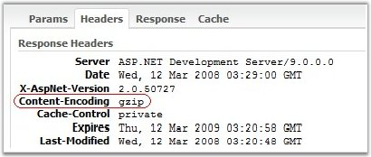

The Syncfusion Essential studio makes use of class named ScriptResourceAttribute, which can be used to define a resource in an assembly to be used from a client script file.
Then the resource files which are all used in the Syncfusion controls will be gzipped and served over the network. The following screen shot shows this.

Figure 39: Resource files Gzipped
In order to achieve this, we need to set the following attributes in the project's web.config file.
|
<configuration
system.web.extensions/> |
As the resource files gets gzipped:
· It saves the precious network band-width.
· It reduces the load-time. As a result, the webform which consists of the Syncfusion controls, will get loaded more faster on the client browser.
· It also reduces the network traffic.
Properties and Methods used to improve chart performance
|
Chart Control |
Description |
|
Properties | |
|
CalcRegions |
This property by default is true. This controls the Tooltips, Autohighlighting properties and RegionHit events. If these properties and events are not used, this property can be set to false for better performance. |
|
ChartSeries.EnableStyles |
Disabling this property will in turn disable the point symbols and point text which speeds up the chart. |
|
ChartSeries.Style.DisplayShadow |
Setting this property to false will not render the series with shadow, which will increase the speed of the chart.
By default this property is set to false. |
|
Indexed |
The chart renders faster if the series is not indexed. This of course, may or may not be possible in all cases.
By default this property is false. |
|
BackInterior |
The background style for the Chart control is specified using this property and if this property is not set with gradient or pattern style, will help improve the performance of the chart. |
|
ChartArea.BackInterior |
This property sets the back color for the chart area. If not set with gradient or pattern style, will help improve the performance of the chart. |
|
ChartInterior |
If this property which fills the chart interior, not set with gradient or pattern style, will improve the performance of the chart. |
|
Methods | |
|
BeginUpdate and EndUpdate |
Encapsulate your "data points adding code" within BeginUpdate and EndUpdate to improve Chart initialization speed. See the example below. |
|
[C#]
// Improves the performance of the chart
this.ChartWebControl1.CalcRegions = false;
this.ChartWebControl1.Series[0].EnableStyles = false;
this.ChartWebControl1.Series[0].Style.DisplayShadow = false;
this.ChartWebControl1.Indexed = true;
//BeginUpdate and EndUpdate methods private DataModel datamodel1; ChartSeries series = this.ChartWebControl1.Model.NewSeries("Line 1", ChartSeriesType.Line);
this.ChartWebControl1.BeginUpdate();
// Add a whole bunch of points to the series like this: series.Points.Add(1, 10), etc.
this.ChartWebControl1.EndUpdate(); |
|
[VB.NET]
' Improves the performance of the chart
Me.ChartWebControl1.CalcRegions = False
Me.ChartWebControl1.Series[0].EnableStyles = False
Me.ChartWebControl1.Series[0].Style.DisplayShadow = False
Me.ChartWebControl1.Indexed = True
'BeginUpdate and EndUpdate methods Private datamodel1 As DataModel Private series As ChartSeries = Me.ChartWebControl1.Model.NewSeries("Line 1", ChartSeriesType.Line)
Me.ChartWebControl1.BeginUpdate()
'Add a whole bunch of points to the series like this: series.Points.Add(1, 10), etc.
Me.ChartWebControl1.EndUpdate() |